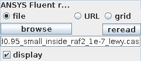
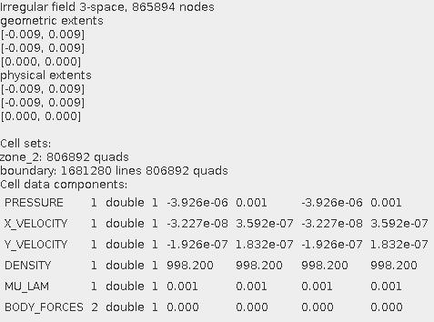
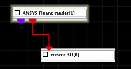
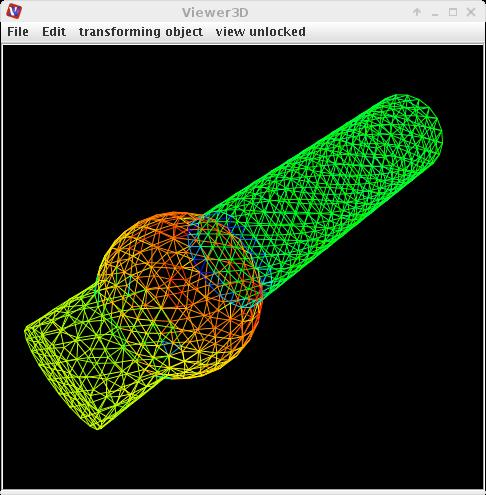

|
|
|
Reads ANSYS Fluent CAS format.
| input port | type | description | data acceptors |
|---|---|---|---|
| output port | type | description | data schemas |
| outField | VNIrregularField | Irregular Field |
|
| outObj | VNGeometryObject |
ANSYS Fluent Reader
The module reads ANSYS Fluent *.cas files.
Output data
The output field is irregular. There is a geometry object of the field.
Computation parameters

To select an input file click the browse button and select a file in the file browser or type the file name into the text input field below the button.
A radio button panel defines the source of the input data either from file, URL or from grid.
If display check box is on the geometry object is shown in the viewer. To prevent the viewer from showing it switch the box off before data is read.
To reread the same input file select the reread button.
After reading in data from the input file there appears some basic information about the data:

Presentation parameters
Presentation tab contents are described in the common interfaces section unter the Presentation Panel entry.
Example

Choose the ANSYS Fluent reader from the irregular data readers library and move it into the work space. Choose …. file.
In the presentation tab of the module switch surface off and lines on.
